Time Series Analysis
A time series is an ordered set of observations together with an information structure: timestamps, sampling rules, and sequence position determine what can depend on what and what information is available for prediction. Treating the same values as an unordered sample would discard much of the structure that time-series methods are designed to model.
A useful analysis starts by identifying trend, seasonality, breaks, changing variance, lag dependence, and the forecast information set before choosing a model. Transformations and dynamic models then represent specific mechanisms, while evaluation must preserve chronology so that future information is never used to explain the past.
Formula reference
| Topic | General formula | Interpretation / special case |
|---|---|---|
| Additive decomposition | $Y_t=T_t+S_t+R_t$ | Trend + seasonal + remainder. |
| Multiplicative decomposition | $Y_t=T_tS_tR_t$ | Useful when seasonal/remainder scale grows with level. |
| Mean function | $\mu_t=E[Y_t]$ | Weak stationarity requires $\mu_t=\mu$. |
| Autocovariance | $\gamma(t,s)=\mathrm{Cov}(Y_t,Y_s)$ | Under weak stationarity, $\gamma(t,s)=\gamma(t-s)$. |
| Autocorrelation | $\rho(h)=\gamma(h)/\gamma(0)$ | Unit-free lag dependence. |
| Backshift | $B^kY_t=Y_{t-k}$ | Compact lag notation. |
| First difference | $\Delta Y_t=(1-B)Y_t=Y_t-Y_{t-1}$ | Models one-period changes. |
| Seasonal difference | $\Delta_sY_t=(1-B^s)Y_t=Y_t-Y_{t-s}$ | Compares the same seasonal position across cycles. |
| Trailing moving average | $\tilde Y_t=w^{-1}\sum_{j=0}^{w-1}Y_{t-j}$ | Descriptive past-only smoother. |
| Simple exponential smoothing | $\ell_t=\alpha Y_t+(1-\alpha)\ell_{t-1}$ | Recursive level update; forecast is commonly $\ell_t$. |
| White noise | $E\varepsilon_t=0$, $\mathrm{Var}(\varepsilon_t)=\sigma^2$, $\gamma_\varepsilon(h)=0$ for $h\ne0$ | Baseline uncorrelated shock process. |
| Random walk | $Y_t=Y_{t-1}+\varepsilon_t$ | Nonstationary level; $\Delta Y_t=\varepsilon_t$. |
| AR($p$) | $Y_t=c+\sum_{i=1}^{p}\phi_iY_{t-i}+\varepsilon_t$ | Dependence on observed lagged values. |
| MA($q$) | $Y_t=\mu+\varepsilon_t+\sum_{j=1}^{q}\theta_j\varepsilon_{t-j}$ | Dependence on current and lagged innovations. |
| ARMA($p,q$) | $\phi(B)(Y_t-\mu)=\theta(B)\varepsilon_t$ | Stationary short-memory linear model. |
| ARIMA($p,d,q$) | $\phi(B)(1-B)^dY_t=c+\theta(B)\varepsilon_t$ | Adds differencing for integrated behavior. |
| SARIMA | $\Phi(B^s)\phi(B)(1-B^s)^D(1-B)^dY_t=\Theta(B^s)\theta(B)\varepsilon_t$ | Adds seasonal AR, MA, and differencing. |
| Forecast | $\hat Y_{t+h\mid t}=E(Y_{t+h}\mid\mathcal F_t)$ | Conditional mean under squared-error loss. |
| Forecast error | $e_{t,h}=Y_{t+h}-\hat Y_{t+h\mid t}$ | Must be evaluated using information available at origin $t$. |
| Nyquist frequency | $f_N=f_s/2$ | Highest uniquely distinguishable frequency under regular sampling. |
Worked decomposition: identifying the pieces
Suppose a monthly series is described by
$$ y_t=100+0.5t+10\sin\left(\frac{2\pi t}{12}\right)+\varepsilon_t, \qquad E(\varepsilon_t)=0, \qquad \mathrm{Var}(\varepsilon_t)=4. $$
At $t=6$, the seasonal term is
$$ 10\sin(\pi)=0, $$
so the deterministic part is $100+0.5(6)=103$. At $t=3$, the seasonal term is
$$ 10\sin\left(\frac{\pi}{2}\right)=10, $$
so the deterministic part is $100+0.5(3)+10=111.5$.
The same trend can therefore produce very different observations at different seasonal positions. This example separates three questions: is the level changing, is a pattern repeating at a known period, and how large is the unpredictable remainder? Those questions determine whether trend modeling, seasonal adjustment or differencing, and a stochastic dependence model are appropriate.
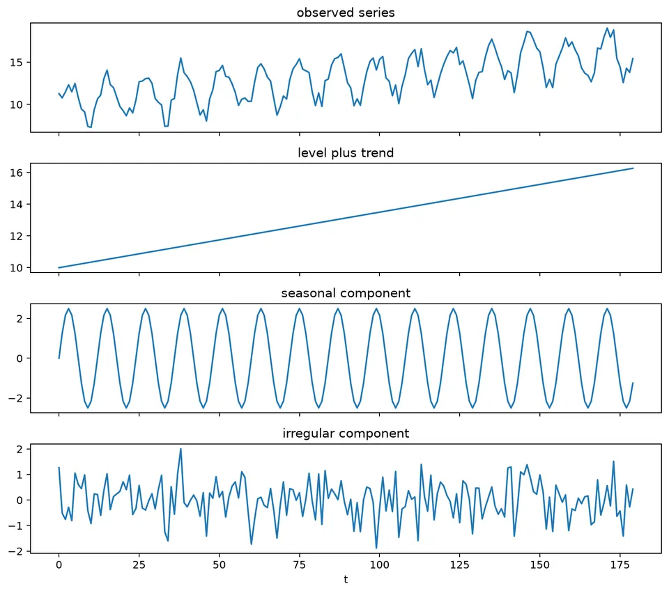
The figure shows these components together. Trend describes slow level movement, seasonality describes regular within-cycle variation, and the remainder captures variation not explained by the chosen decomposition.
A time series is an ordered collection of observations indexed by time or another meaningful ordered variable. In applied work, the observations are often recorded on a regular grid such as hourly, daily, monthly, or quarterly, but irregularly spaced observations are also time series and require methods that respect their sampling pattern.
Time-series analysis studies how observations evolve, how their dependence changes with lag, which systematic structures are present, and how uncertainty propagates into future forecasts.
Discrete vs. continuous time series
- A discrete-time series is observed at distinct indexed times, such as daily or monthly observations.
- A continuous-time process is defined over a continuous time interval, even if it may only be sampled at discrete times.
- Most methods in these notes focus on discrete-time data.
Ordered Index, Not Just Time
The index only needs a meaningful order and direction. Besides clock time, examples include depth, distance along a transect, or sequential position in a production line. What matters is that the order is scientifically meaningful and that lagged relationships can be interpreted consistently.
First Look: Plotting the Series
A time plot is one of the most informative first diagnostics. It can reveal trend, repeating seasonality, cycles, changing variance, outliers, missing periods, and structural breaks.
The plot should be read together with a description of what each observation represents. A daily total, a monthly average, and an instantaneous measurement have different meanings even if they share the same timestamps.
The following synthetic examples isolate common patterns.
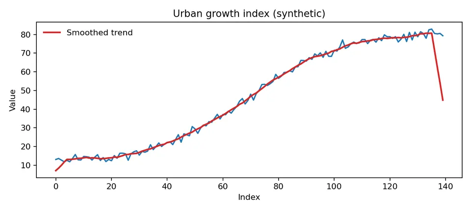
A smooth nonlinear rise suggests that a constant-level stationary model would be inappropriate without a trend component or transformation.
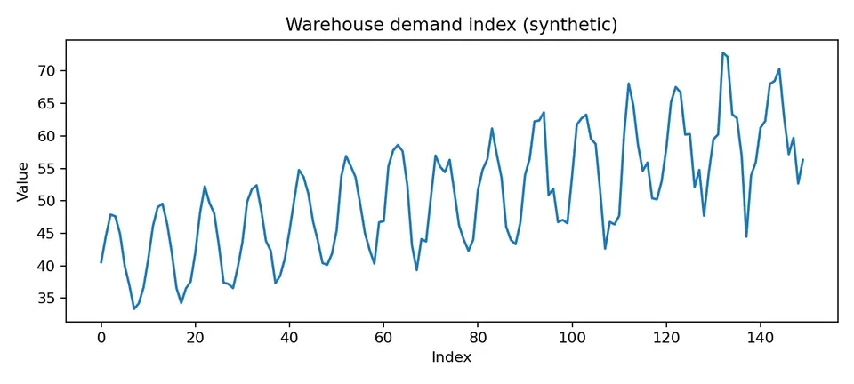
Here the seasonal pattern repeats while its amplitude grows. The increasing spread suggests considering a log or other variance-stabilizing transformation before modeling the seasonal structure.
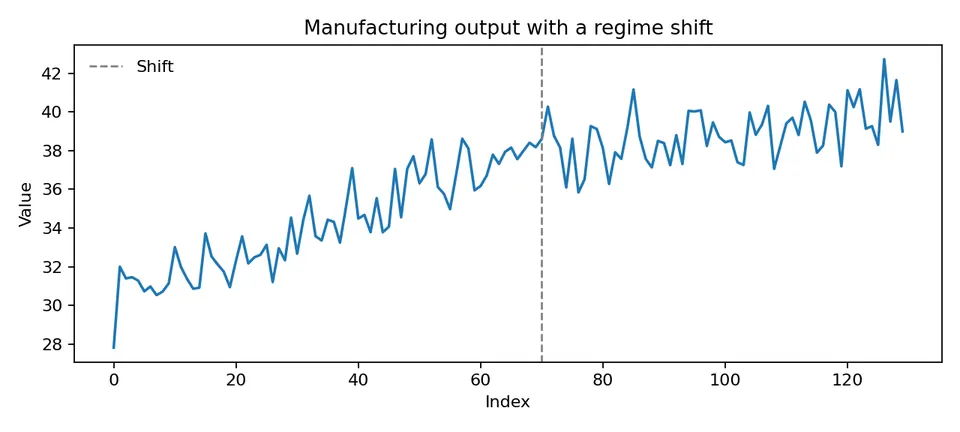
A structural break changes the data-generating mechanism. Fitting one stable parameter set across both regimes can produce misleading averages.
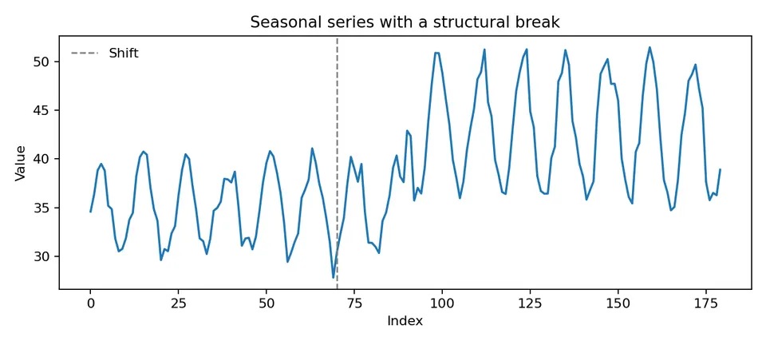
This example shows that both the level and seasonal amplitude can change after a break, so simply estimating one seasonal index for the full sample may be inadequate.
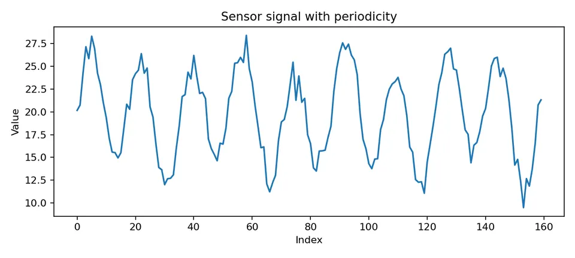
A series can oscillate without having calendar seasonality. Seasonality refers to a fixed repeating period tied to the sampling structure; other periodic or cyclic behavior may have a different mechanism.
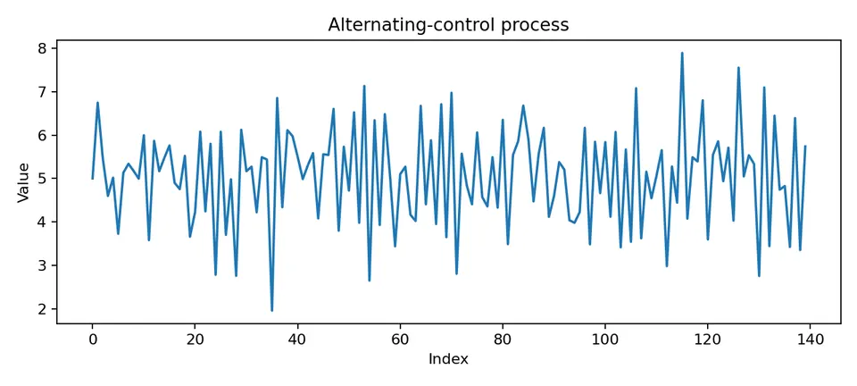
Negative short-lag dependence tends to produce alternation around the mean.
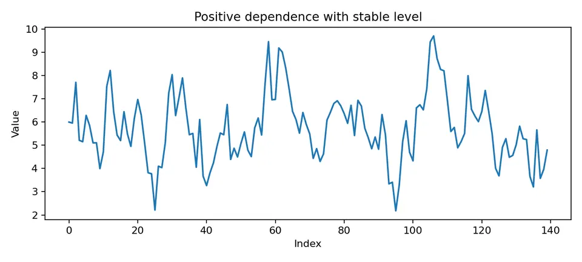
Positive short-lag dependence tends to produce runs of observations on the same side of the mean.
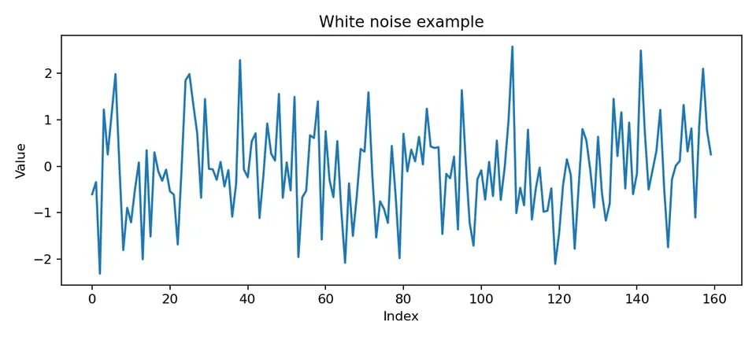
White noise has a stable mean and variance with no linear autocorrelation at nonzero lags. A finite realization can still show apparent short runs by chance.
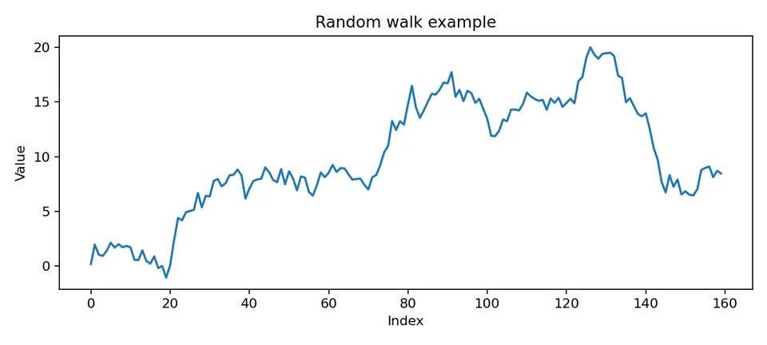
A random walk accumulates shocks, so its level wanders and its variance grows with time. The visual contrast with white noise is a first illustration of stationary versus non-stationary behavior.
Goals of Time Series Analysis
Time-series analysis can be used to describe recurring structure, estimate dynamic relationships, detect changes, explain mechanisms, and forecast future values. The appropriate method depends on the goal: a descriptive smoother, a causal analysis, and an operational forecast may use the same dataset but require different assumptions.
Modeling Mindset
We often treat the observed series as one realization of an underlying stochastic process. The observations are generally not assumed to be IID because their distributions, conditional means, variances, or lag relationships can depend on time and past information.
Trend and seasonality are forms of systematic time structure, but they are not themselves the same as stochastic serial dependence. After deterministic or evolving mean structure is modeled, the remaining process may still have autocorrelation that requires an ARMA-type description.
A complete probabilistic specification for observations $X_1,\ldots,X_n$ is their joint distribution,
$$ F(c_1,\ldots,c_n) =P(X_1\le c_1,\ldots,X_n\le c_n). $$
In practice, specifying a high-dimensional joint distribution directly is usually impractical. Time-series models instead exploit structure: conditional distributions, state equations, means, variances, autocovariances, or factorized likelihoods.

The changing-moments figure illustrates why one global mean and variance can be misleading when the process evolves. Stationarity assumptions should be checked against the time variation visible in the data.
The need for Time Series Models
Ordinary regression and time-series modeling are not competing domains. Regression can include time, lagged predictors, calendar effects, and serial-error structures. The distinctive challenge in forecasting is that observations are ordered, future information is unavailable, and uncertainty often depends on forecast horizon.
For electricity consumption, temperature and household characteristics may explain part of the conditional mean, while recent consumption, day-of-week effects, and seasonal dynamics can explain additional temporal structure. A dynamic regression or state-space model can combine both sources of information.
A useful contrast is therefore not "regression versus time series," but static independent-error modeling versus models that respect temporal information and dependence.
In a forecasting problem:
- training and evaluation must preserve chronological order;
- lagged observations can contain predictive information;
- future predictor values may need their own forecasts;
- uncertainty usually changes with horizon;
- trend, seasonality, breaks, and evolving variance must be handled explicitly.
The following electricity-consumption example compares a simple regression-style projection with a seasonal time-series forecast.
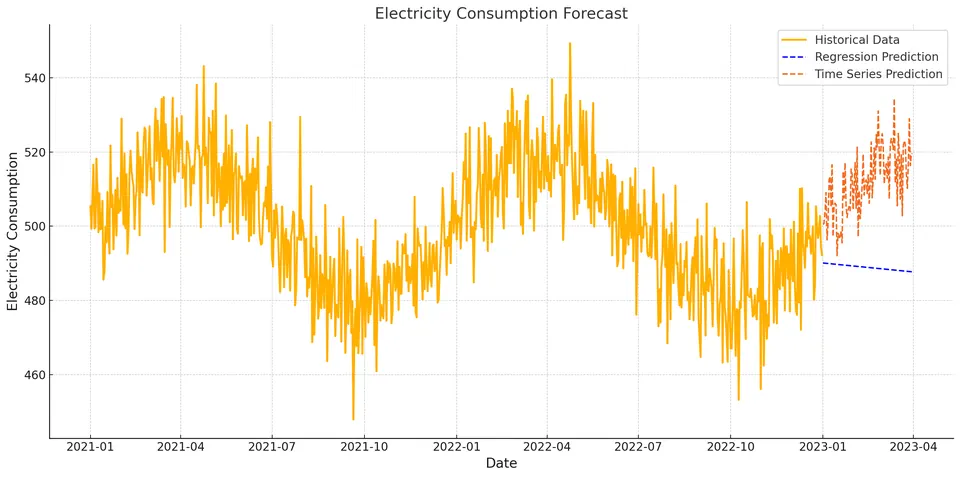
The historical line establishes the observed pattern. The linear projection extends a simple trend, while the exponential-smoothing forecast also reflects seasonal structure. The comparison demonstrates how different structural assumptions lead to different extrapolations beyond the observed sample.
Diagnostic Gallery (Synthetic Examples)
The synthetic examples above form a diagnostic gallery: each plot isolates a feature that changes the modeling decision. Trend suggests a changing mean, seasonality suggests a repeating component, heteroskedasticity suggests changing variance, breaks suggest parameter instability, and positive or negative lag dependence motivates explicit dynamic structure.
The point of the gallery is not to classify a real series from appearance alone. Real data often combine several of these features, so plots should be followed by transformations, lag diagnostics, domain knowledge, and forecast validation.
Components of a Time Series
A time series can often be described in terms of several broad components:
- Trend: a persistent long-run movement in level or slope.
- Seasonality: a pattern tied to a fixed, known period.
- Cycles: oscillations whose timing is less regular than seasonality.
- Irregular variation: variation not explained by the chosen systematic structure.
- Structural breaks: changes in the mechanism itself rather than ordinary fluctuations around one stable model.
A decomposition is a modeling choice, not a unique physical partition. Different smoothers or state-space models can assign variation differently between trend, cycle, seasonality, and remainder.
Time Series Analysis Techniques
Time-series methods are often grouped into time-domain and frequency-domain approaches. The two views are complementary: one describes relationships by lag, while the other describes variation by frequency.
A Simple Modeling Workflow
- Plot the series and identify trend, seasonality, breaks, missingness, and variance changes.
- Define the target and information set before choosing transformations.
- Model or transform systematic structure such as trend and seasonality when justified.
- Inspect dependence with residual plots, ACF/PACF, or state-space innovations.
- Fit parsimonious candidates that match the remaining structure.
- Forecast and reconstruct the target scale when transformations were used.
- Evaluate chronologically against suitable baselines.
Time-Domain Methods
Time-domain methods work directly with ordered observations and lags. The autocorrelation function summarizes linear dependence within one series, while cross-correlation describes lagged linear association between two series. Cross-correlation does not by itself establish direction or causality because common trends, seasonality, and omitted variables can create apparent lead-lag patterns.
Common time-domain model families include autoregressive and moving-average models, ARIMA, exponential smoothing, dynamic regression, state-space models, and multivariate VAR/VECM models.
A rolling moving average is a descriptive smoother computed from observed values. An MA($q$) stochastic model is different: it represents the current value as a finite combination of unobserved innovations. Keeping these terms separate avoids a common source of confusion.
Exponential smoothing recursively updates latent level, trend, or seasonal states. ARIMA combines differencing with AR and MA dependence. Neither method is universally preferable; each encodes a different representation of evolving structure.
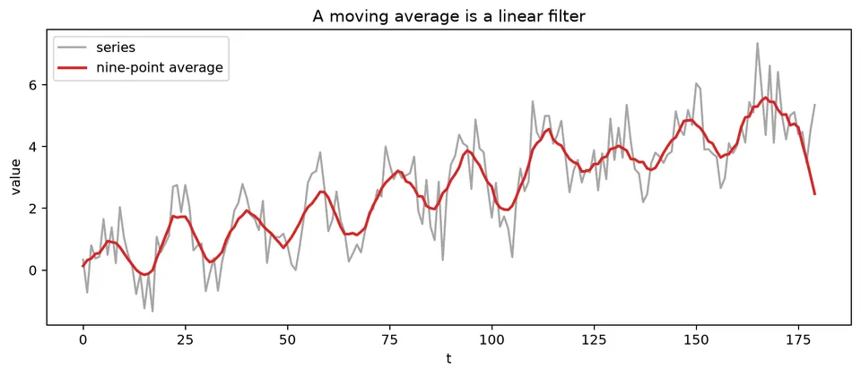
The linear-filter figure connects many time-domain operations. Smoothing, differencing, and ARMA representations can all be expressed as weighted combinations of lagged observations or shocks, with different weight patterns serving different purposes.
Frequency-Domain Methods
Frequency-domain methods decompose variation into oscillations at different frequencies. Fourier and spectral methods are especially useful for detecting dominant cycles and comparing frequency-specific relationships between series.
Wavelet methods add time localization, making them useful when the frequency content changes over the record. Frequency-domain analysis still depends on the sampling rate and stationarity assumptions; aliasing and spectral leakage can distort interpretation.
Parametric vs. Non-Parametric Methods
Parametric methods specify a finite-dimensional model such as ARMA, VAR, or a state-space system and estimate its parameters. Non-parametric or weakly parametric methods estimate features such as autocovariance or spectral density with fewer assumptions about a complete data-generating equation.
Both require assumptions. A non-parametric estimate is not assumption-free; smoothing choices, stationarity, bandwidth, and sampling structure still matter.
Types of Timeseries
Models can also be described by the number of series and the form of their relationships:
- Linear univariate: one target with linear dependence on its own history or innovations.
- Linear multivariate: several series linked through linear dynamic relationships.
- Nonlinear univariate: one target with nonlinear state or lag dependence.
- Nonlinear multivariate: several variables with nonlinear interactions.
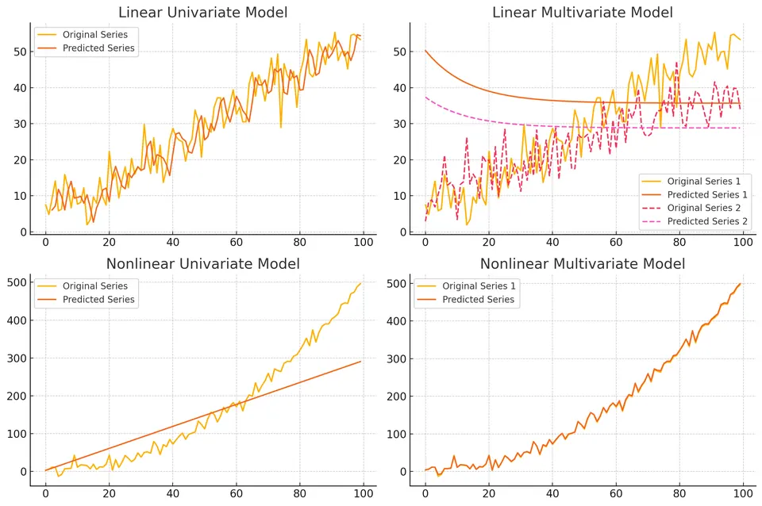
The figure places representative model classes into these four categories. The classification describes structural flexibility, not forecast quality; a simpler linear model can outperform a nonlinear model when the extra flexibility is unsupported by the data.
Applications of Time Series Analysis
Time-series analysis is used wherever ordered observations support monitoring or forecasting. Financial applications model returns, volatility, and risk; meteorological applications forecast evolving physical variables; and sales or demand forecasting supports inventory, staffing, and production planning.
The modeling objective and information set differ across these domains, so the same method should not be transferred without checking sampling, loss functions, and forecast horizons.
Example
Consider monthly sales:
| Month | Sales |
|---|---|
| 1 | 100 |
| 2 | 120 |
| 3 | 110 |
| 4 | 130 |
| 5 | 140 |
| 6 | 150 |
| 7 | 160 |
| 8 | 180 |
| 9 | 170 |
| 10 | 190 |
| 11 | 200 |
| 12 | 210 |
Plotting the Time Series Data
An ASCII plot makes the upward movement visible:
Sales
210 | x
200 | x
190 | x
180 | x
170 | x
160 | x
150 | x
140 | x
130 | x
120 | x
110 | x
100 | x
-------------------------------------
1 2 3 4 5 6 7 8 9 10 11 12
MonthThe plot suggests an increasing level, but twelve observations are not enough to establish a stable long-run trend or a seasonal pattern. Any forecast should therefore be compared with a simple baseline and treated as highly uncertain.
Applying Moving Average
A trailing three-month moving average smooths short-run fluctuations:
| Month | Sales | Moving Average (Window=3) |
|---|---|---|
| 1 | 100 | |
| 2 | 120 | |
| 3 | 110 | 110 |
| 4 | 130 | 120 |
| 5 | 140 | 127 |
| 6 | 150 | 140 |
| 7 | 160 | 150 |
| 8 | 180 | 163 |
| 9 | 170 | 170 |
| 10 | 190 | 180 |
| 11 | 200 | 187 |
| 12 | 210 | 200 |
The smoother confirms the broad upward movement but is descriptive: it does not by itself define a probabilistic forecast model.
The same data can be fit with simple exponential smoothing (SES):
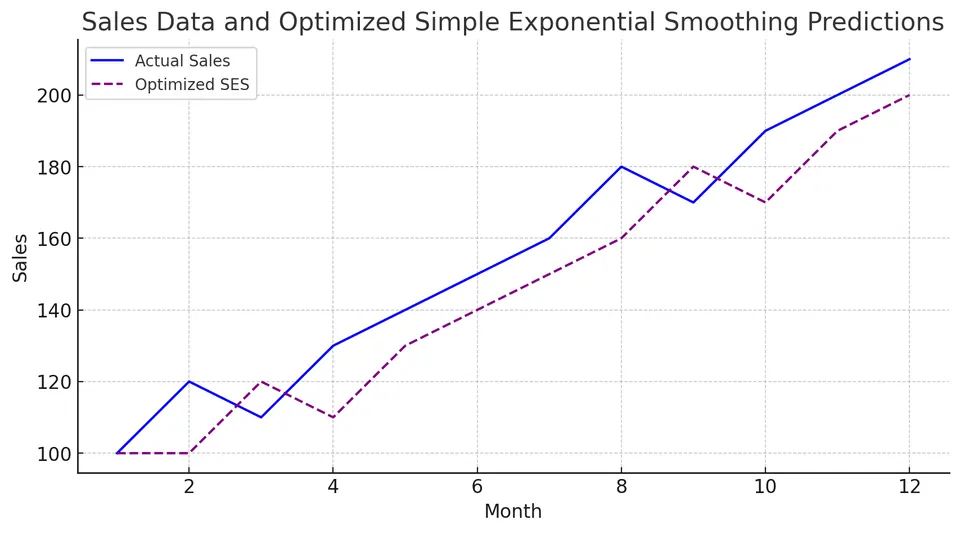
The actual sales line provides the target, while the SES line shows a recursively updated level estimate. Because SES has no explicit trend component, its appropriateness should be judged against trend-aware alternatives if the upward movement persists.
Student guide: a time series is data plus an information structure
A time series is not only a vector $y_1,\ldots,y_T$. Timestamps, sampling rules, support, release timing, and order determine which observations can inform a forecast and which dependence patterns are scientifically plausible.
Learning objectives
After working through this chapter, you should be able to:
- distinguish a time series from an unordered sample;
- identify trend, seasonality, cycles, breaks, and irregular variation;
- write a decomposition and calculate its pieces at a chosen time;
- explain why sampling frequency limits the patterns that can be identified;
- choose an initial transformation without losing sight of the original target;
- define a forecast origin and valid information set;
- distinguish descriptive smoothing from stochastic model terms.
What is indexed by time?
At each time $t$, an observation may be a point measurement, interval total, interval average, event count, or vector of measurements recorded together. These supports are not interchangeable.
Aggregating hourly demand into daily totals changes variance, seasonality, and lag dependence. A model for a daily total should therefore not be interpreted as a model for an instantaneous hourly value.
Components with a numerical example
An additive teaching decomposition is
$$ y_t=T_t+S_t+R_t. $$
For
$$ y_t=100+0.5t+10\sin\left(\frac{2\pi t}{12}\right)+\varepsilon_t, $$
at $t=3$,
$$ T_3=100+0.5(3)=101.5, \qquad S_3=10\sin\left(\frac{\pi}{2}\right)=10. $$
The deterministic part is $111.5$. If $\varepsilon_3=-1.2$, the observed value is $110.3$. At $t=6$, $S_6=0$, so the deterministic part is $103$.
A visible difference between the two months therefore need not indicate a change in the long-run trend; it can be entirely due to seasonal phase.
For multiplicative behavior,
$$ y_t=T_tS_tR_t, $$
a log transformation gives
$$ \log y_t=\log T_t+\log S_t+\log R_t, $$
when the values are positive and the multiplicative representation is appropriate.
Trend, seasonality, cycle, and break
- Trend: persistent movement in level or slope.
- Seasonality: a pattern tied to a fixed repeating period.
- Cycle: a longer or less regular oscillation.
- Structural break: a change in the process or parameter regime.
- Irregular component: variation not explained by the chosen structure.
A trend is not necessarily a unit root, a seasonal pattern is not necessarily a seasonal AR term, and a structural break is not automatically an outlier to delete.
Sampling and aliasing
Sampling determines which frequencies can be distinguished. With one observation per interval, the Nyquist frequency is $0.5$ cycles per observation. A higher-frequency signal can appear as a lower-frequency alias when the sampling rate is too low.
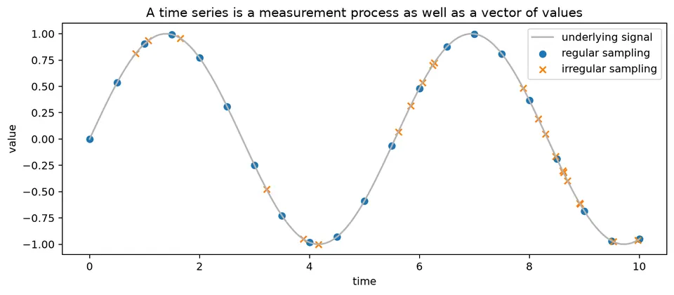
The figure also contrasts regular and irregular timestamps. Standard ACF and Fourier formulas assume a regular grid. Interpolating irregular observations onto such a grid can be useful, but it creates synthetic values and can alter dependence, so it should be treated as a modeling decision.
First-pass exploration
Record the following before modeling:
| question | diagnostic |
|---|---|
| Is the index regular? | timestamp differences |
| Are values missing? | missingness by time and season |
| Does spread grow with level? | level plot and log plot |
| Is there a repeating period? | seasonal subplots and lag-$s$ dependence |
| Is there a break? | rolling moments and event history |
| Are observations dependent? | ACF/PACF and domain mechanism |
| What will be forecast? | target definition and horizon |
The first plot should always be accompanied by a statement of what one observation represents.
Smoothing versus forecasting
A trailing moving average
$$ \tilde y_t=\frac{1}{w}\sum_{j=0}^{w-1}y_{t-j} $$
is a descriptive filter. A centered moving average uses future observations relative to $t$ and is therefore retrospective rather than a valid real-time feature.
Simple exponential smoothing updates a level recursively:
$$ \ell_t=\alpha y_t+(1-\alpha)\ell_{t-1}. $$
The filtered level can also be used as a forecast. The smoothing parameter controls responsiveness; it is not by itself a measure of model quality.
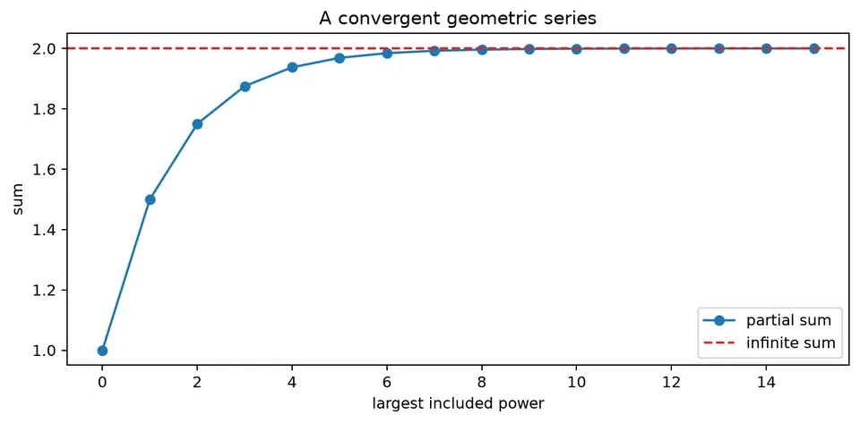
The geometric-series figure explains why exponential weighting has a long but decaying memory: recursively applied weights shrink geometrically as observations become older.
The information set
If a forecast is issued at time $t$, define the available information $\mathcal F_t$. Every transformation, feature, parameter estimate, and model choice used in a historical backtest must be based only on information in that set.
This includes scaling, imputation, seasonal adjustment, feature selection, predictor values, and hyperparameter tuning. The same formula can be valid or leaked depending on whether it is recomputed inside each historical training window.
Difference equations and stochastic dynamics
Many time-series models are recursions. Their stability depends on whether the effect of an initial condition or shock decays.

The figure shows stable and unstable recursions. In a stable system, deviations shrink over time; in an unstable system, they grow.
White noise, random walks, and stationarity
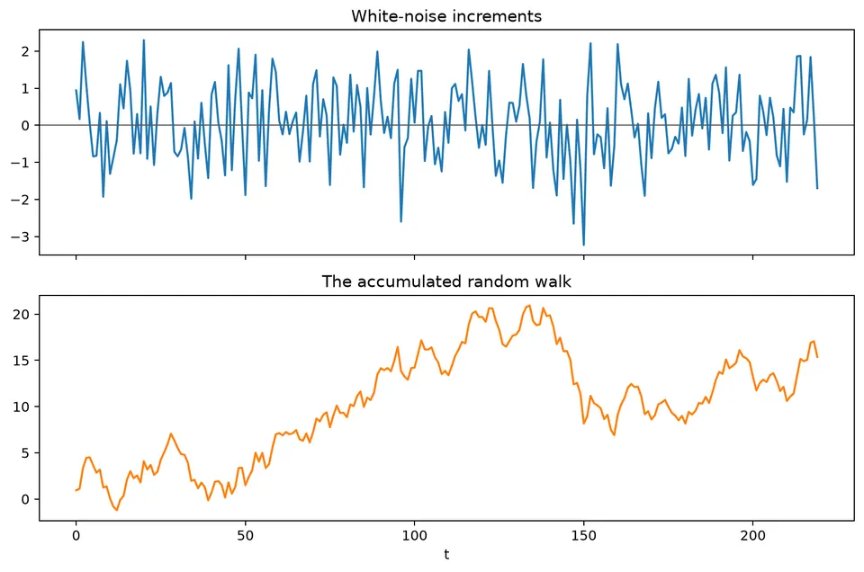
White noise has stable second-order properties, while a random walk accumulates shocks and develops increasing level uncertainty.
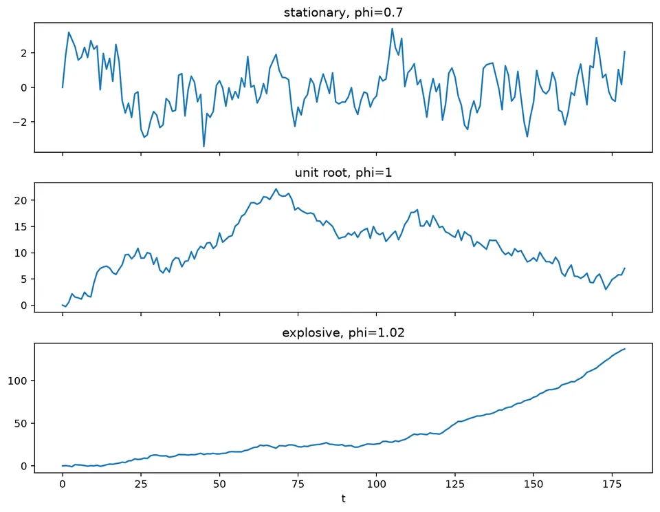
The stationarity figure places stable, unit-root, and explosive behavior side by side. These cases can look similar in short samples, which is why plots, root conditions, transformations, and formal tests should be interpreted together.
Recommended workflow
- State the observational unit and time support.
- Plot levels and relevant transformations.
- Audit timestamp regularity and missingness.
- Describe trend, seasonality, breaks, and changing variance.
- Define the forecast target, horizon, and information set.
- Choose a simple baseline before fitting a complex model.
- Transform only for a stated modeling reason.
- Preserve chronological order in validation.
- Diagnose residuals and forecast errors.
- Explain the limitations of the chosen representation.